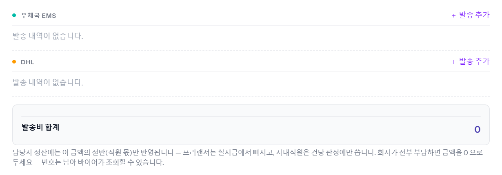
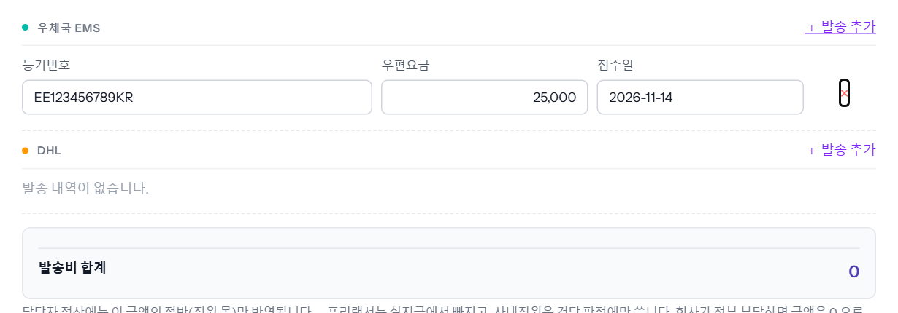
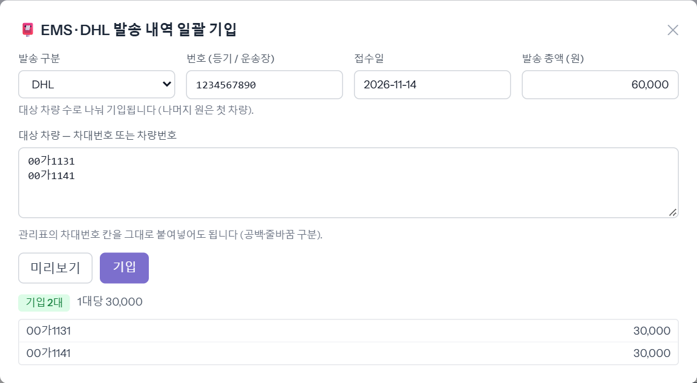
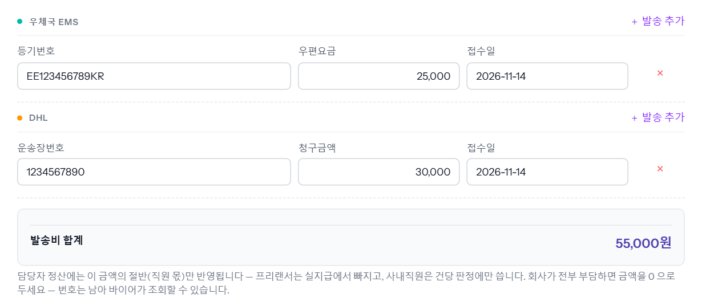

B/L 원본 등 서류를 바이어에게 우체국 EMS 나 DHL 로 보냈을 때 번호 · 요금 · 접수일을 남기는 곳입니다. 한 대씩은 차 창의 「EMS / DHL」 탭에서, 여러 대를 한 번에 보냈으면 차량 목록 아래 [EMS/DHL 기입]으로 총액을 대수만큼 나눠 넣습니다. 예시 차량 00가1131 · 00가1141.

EMS 는 등기번호 · 우편요금 · 접수일, DHL 은 운송장번호 · 청구금액 · 접수일입니다. 접수일에는 오늘이 미리 들어가 있으니 다른 날이면 지우고 적습니다(8자리 20261114 도 됩니다). [수정 저장]으로 저장합니다.

같은 차를 두 번 보냈으면 [＋ 발송 추가]로 줄을 하나 더 만듭니다 — 앞 줄을 고쳐 쓰면 앞 발송 기록이 사라집니다. 줄 끝 ×로 지울 수 있습니다.
대상 차량 칸에 차량번호나 차대번호를 줄마다 붙여 넣습니다(관리표의 차대번호 칸을 그대로 붙여도 됩니다). 목록에서 차를 체크해 두고 열면 그 차들이 미리 들어갑니다. [미리보기]로 대당 금액을 확인하고 [기입]을 누릅니다. 총액은 대수만큼 나뉘고 남는 원은 첫 차에 붙습니다.

각 차의 탭에 그 발송 줄이 생깁니다. 아래 「발송비 합계」가 그 차의 EMS + DHL 합입니다.
